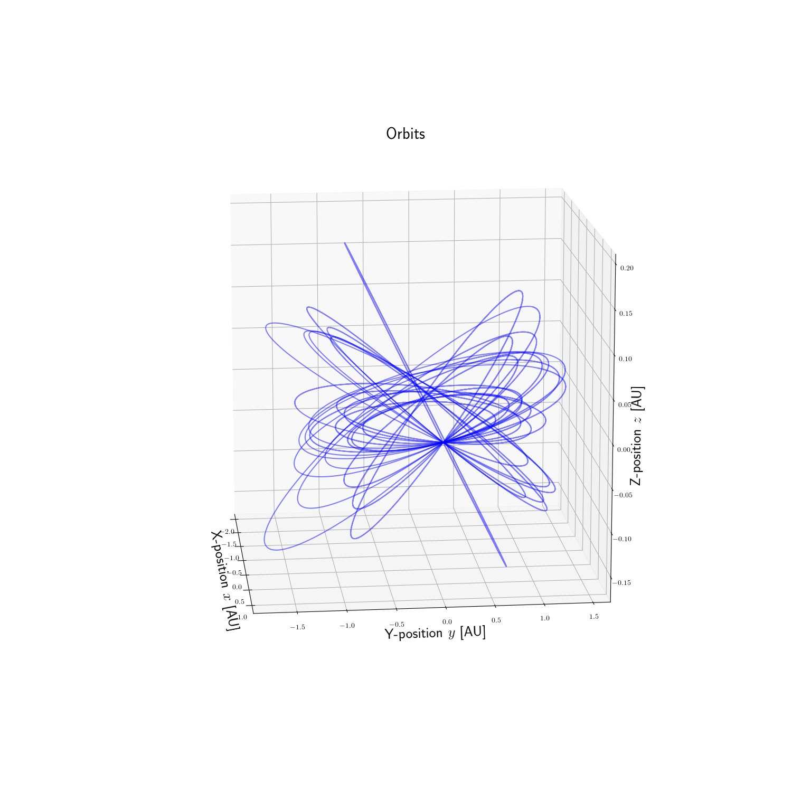

Note
Click here to download the full example code
Propagation¶
import pyorb
import numpy as np
import matplotlib.pyplot as plt
#turn on TeX interperter
plt.rc('text', usetex=True)
#for reproducibility
np.random.seed(12398748)
#We first create a standard orbit around the sun in SI units
#We want it to be completely empty to start with so we set num=0
orb = pyorb.Orbit(M0 = pyorb.M_sol, num=0)
#Create 10 equal orbits
orb.add(num=25, a=pyorb.AU, e=0, i=0, omega=0, Omega=0, anom=0)
#calculate cartesian elements
orb.calculate_cartesian()
#Add a symmetric Gaussian distribution on the velocity
std = 3e3
orb.vx += np.random.randn(orb.num)*std
orb.vy += np.random.randn(orb.num)*std
orb.vz += np.random.randn(orb.num)*std
#Go back to kepler based on the cartesian
orb.calculate_kepler()
dt = 3600*24.0*2
num = 400
fig = plt.figure(figsize=(15,15))
ax = fig.add_subplot(111, projection='3d')
for o in orb:
r = np.empty((3,num))
for ti in range(num):
o.propagate(dt)
r[:,ti] = np.squeeze(o.r)/pyorb.AU
ax.plot(r[0,:], r[1,:], r[2,:], '-b', alpha=0.5)
ax.set_title('Orbits', fontsize=22)
ax.set_xlabel('X-position $x$ [AU]', fontsize=20)
ax.set_ylabel('Y-position $y$ [AU]', fontsize=20)
ax.set_zlabel('Z-position $z$ [AU]', fontsize=20)
ax.view_init(14,-6)
plt.show()
Total running time of the script: ( 0 minutes 3.598 seconds)